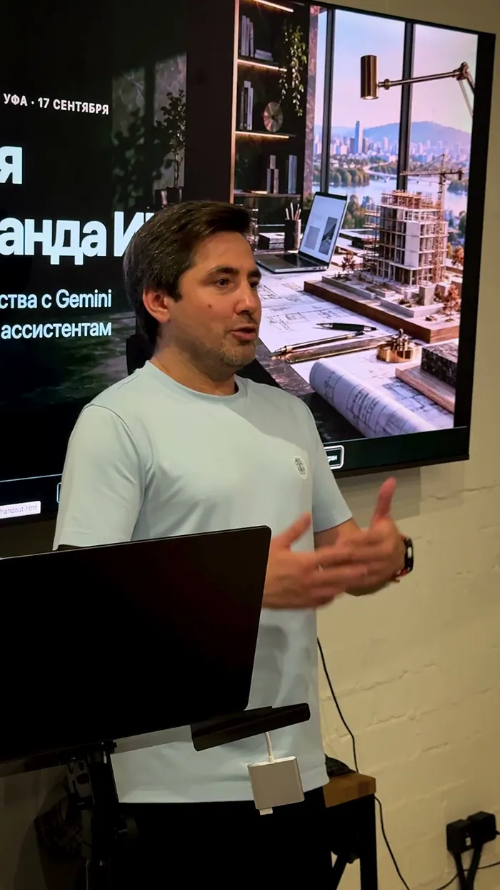

Жёсткие, мягкие
и ИИ-мышление
Третий навык кадров будущего
Комитет ТПП РБ по цифровому развитию, роботизированным решениям и трансформации бизнеса
Пауза, пока представляют. Первая фраза: «Коллеги сегодня рассказывают про нейросети, агентов, базу знаний и проверку ответов ИИ. Я расскажу, на чём всё это держится».

Альберт Валеев
Эксперт по внедрению ИИ в бизнес, основатель школы ИИ neovida.ai, автор методики
Коротко, 30 секунд. Главное: мы учим не айтишников, а обычных сотрудников, руководителей и госслужащих. Лицензия: образовательная, Минпросвещения РБ (если спросят).



Учим сотрудников думать вместе с ИИ
Можно пропустить, если время поджимает. Смысл: у нас не теория, мы каждую неделю учим живых людей и видим, где они застревают.

Учим кнопкам, а кнопки меняются
Флагман ChatGPT с августа 2025 по сентябрь 2026 сменился семь раз. Большинство курсов по ИИ учат кнопкам: куда нажать в конкретной программе. Через три месяца программа другая, обучение надо повторять.

Мотор поставили.
Рост не пришёл
Первые электростанции в 1881 году, к 1900 году электромоторы давали заводам меньше 5% мощности. Эффект дал не мотор, а перестройка цеха и обученный рабочий. С ИИ то же самое: дали сотрудникам нейросеть, а думают они по-старому.


30 лет назад в резюме писали «уверенный пользователь ПК». Сегодня требуются уверенные пользователи ИИАлександр Ведяхин, первый зампред Сбера · «Ведомости», 23.07.2025
Про жёсткие и мягкие навыки все знают. Клик: появился третий класс. Это не знание программ, а умение думать вместе с ИИ. Клик: Сбер уже пишет это в требованиях ко всем сотрудникам.

Мастер смены
Показать на одном человеке. Мастер не изучал программу. Он понял принцип, нашёл свою выгоду и знает, что спросить. Поменяется нейросеть, сценарий останется. Можно добавить: мастер Toyota Мицуру Каваи (2014): «Чтобы быть хозяином машины, надо уметь её научить».

ИИ передаёт новичку приёмы лучших
Исследование Стэнфорда и MIT: служба поддержки, но механизм тот же, что в цеху. Новичок с помощником выходит на норму втрое быстрее. Ловушка из исследования BCG (TED, ноябрь 2026): без опытного рядом новичок не наращивает суждение. Значит, мастер не уходит, мастер учит думать вместе с ИИ.
Кадры будущего
не нажимают кнопки.
Они думают вместе с ИИ.
Вернуться к цитате с Госсовета: «люди-автоматы, которые умеют только кнопки нажимать». Финальная фраза медленно. Спасибо.